sys.path.append('./code')
# Import our custom functions
from llm_chapter import (ask_smol_lm, get_next_word_suggestions, generate_text_step_by_step)
local_cache_dir = "./models_cache" # or use absolute path like "/Users/your_username/ai_models"
# Create directory if it doesn't exist
Path(local_cache_dir).mkdir(parents=True, exist_ok=True)
# Load model with custom cache directory
model_id = "HuggingFaceTB/SmolLM2-1.7B-Instruct"
# This will download once and store in your specified directory
tokenizer = AutoTokenizer.from_pretrained(model_id, cache_dir=local_cache_dir)
model = AutoModelForCausalLM.from_pretrained(model_id,cache_dir=local_cache_dir,device_map="auto",torch_dtype=torch.float16,low_cpu_mem_usage=True)
device = model.device
# print("Model loaded. Using device:", device)24 Large Language Models
Large Language Models (LLMs) have emerged as a defining technology in artificial intelligence. While their aptitude for writing code is well-known, they also translate languages, analyze legal documents, and converse with fluency that feels human. This chapter explores the mechanisms underlying these capabilities.
LLMs depend on the Transformer architecture, which introduced the attention mechanism. Attention allows the model to dynamically weigh different words within a sequence, capturing long-range dependencies that previous architectures missed. While the mathematical foundations are detailed in Chapter 23, this chapter focuses on operational logic: from Transformer mechanics to emergent reasoning capabilities.
24.1 Autoregressive Generation: Adding One Word at a Time
The most visible capability of LLMs is text generation—specifically, the ability to produce coherent, contextually relevant continuations from a given prompt. This phenomenon relies on a process known as autoregressive modeling. Fundamentally, an LLM is a probability distribution over sequences of text, trained to predict the next token given a preceding context. A token serves as the atomic unit of processing; depending on the tokenization schema, it may represent a full word, a subword unit (like “-ing”), or a single character. Given the prompt \(Q\) and a sequence of tokens \(x_1, x_2, \ldots, x_t\), the model samples the next token \(x_{t+1}\) from the conditional distribution \[ x_{t+1} \sim p(x_{t+1} | Q, x_1, x_2, \ldots, x_t). \] The conditional varaibels \(Q, x_1, x_2, \ldots, x_t\) are called the context. In this case, the prompt might include the user’s question and documents “attached” to the question. To illustrate this mechanism in practice, we will use the SmolLM2 model. We begin by loading the model and its associated tokenizer—the component responsible for translating raw text into the discrete inputs the model understands.
Consider the text The best thing about AI is its ability to. Imagine analyzing billions of pages of human-written text—such as those found on the web or in digitized books—and identifying all instances of this text to determine what word most commonly comes next. While an LLM doesn’t directly search for literal matches, it evaluates semantic and contextual similarities to produce a ranked list of possible next words along with their associated probabilities.
# Get next word suggestions for a given text
initial_text = "The best thing about AI is its ability to"
suggestions = get_next_word_suggestions(initial_text, model, tokenizer, top_k=5)
print(f"Next word suggestions for '{initial_text}':")
## Next word suggestions for 'The best thing about AI is its ability to':
for i, (word, prob) in enumerate(suggestions):
print(f" {i+1}. '{word}' (prob: {prob:.3f})")
## 1. ' learn' (prob: 0.620)
## 2. ' help' (prob: 0.120)
## 3. ' augment' (prob: 0.101)
## 4. ' analyze' (prob: 0.085)
## 5. ' process' (prob: 0.074)flowchart
A["learn<br/>(0.620)"]:::high-prob
B["help<br/>(0.120)"]:::med-high-prob
C["augment<br/>(0.101)"]:::med-prob
D["analyze<br/>(0.085)"]:::med-low-prob
E["process<br/>(0.074)"]:::low-prob
classDef high-prob fill:#4CAF50,stroke:#2E7D32,stroke-width:2px,color:#fff
classDef med-high-prob fill:#8BC34A,stroke:#558B2F,stroke-width:2px,color:#000
classDef med-prob fill:#FFEB3B,stroke:#F57F17,stroke-width:2px,color:#000
classDef med-low-prob fill:#FF9800,stroke:#E65100,stroke-width:2px,color:#fff
classDef low-prob fill:#F44336,stroke:#B71C1C,stroke-width:2px,color:#fff
If we look at the probabilities (on the log scale) of the next 10 words.
Code
import matplotlib.pyplot as plt
import numpy as np
suggestions = get_next_word_suggestions(initial_text, model, tokenizer, top_k=10)
indices = list(range(len(suggestions)))
words = [s[0] for s in suggestions]
probabilities = [s[1] for s in suggestions]
# Plotting the next word suggestions with their log probabilities
plt.plot(indices, np.log10(probabilities), marker='o', linestyle='-', color='skyblue')
plt.xticks(indices, words, rotation=45, ha='right');
plt.xlabel('Next Word Suggestions')
plt.ylabel('Log Probability')
plt.title('Next Word Suggestions with Log Probabilities')
plt.grid()
plt.tight_layout()
plt.show()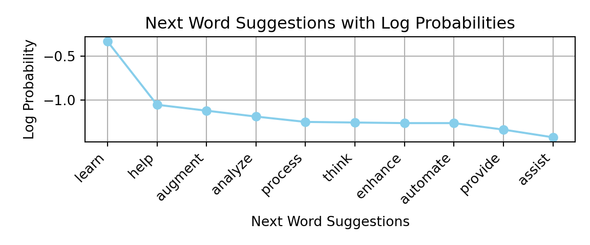
We can see that the probabilities of each next word decay exponentially with rank (outside of the top word ‘learn’). This pattern is reminiscent of Zipf’s law, observed by linguist George Kingsley Zipf in the 1930s, which states that the frequency of a word in natural language is inversely proportional to its rank in the frequency table. While Zipf’s law describes unconditional word frequencies across a corpus, the probability distribution over next tokens given a specific context exhibits a similar heavy-tailed structure: a few continuations are highly probable, while most are rare.
One might assume the model should always select the next token with the highest probability. However, this approach is leads to generated text that is often lacks creativity and can become repetitive. To address this, randomness is introduced into the selection process. By occasionally choosing lower-ranked tokens, the model can produce more varied and engaging text.
This randomness means that using the same prompt multiple times will likely yield different outputs. A parameter called temperature controls the degree of randomness in token selection. Empirically, a temperature value of around 0.8 often strikes a good balance between coherence and creativity for text generation tasks. The term “temperature” originates from statistical physics, where it controls the spread of the Boltzmann distribution over energy states; here, it analogously controls the spread of the probability distribution over tokens (see Equation 24.1 in the Distillation section below for the mathematical formulation). A temperature of 0 would always select the highest-probability token (deterministic), while higher temperatures flatten the distribution, making less probable tokens more likely to be selected.
The following example illustrates the iterative process where the model selects the word with the highest probability at each step:
# Let's start with a simple prompt
initial_text = "The best thing about AI is its ability to"
print(f"Initial text: '{initial_text}'")
## Initial text: 'The best thing about AI is its ability to'# Generate text step by step
generated_text = generate_text_step_by_step(initial_text, model, tokenizer,
num_steps=10, temperature=1.0, sample=False, print_progress=False)
print("Generated text:")
## Generated text:
print(textwrap.fill(generated_text, width=60))
## The best thing about AI is its ability to learn and adapt.
## It can analyze vast amounts ofIn this example, we always select the most probable next token, which leads to a coherent but somewhat predictable continuation. The model generates text by repeatedly applying this process, building on the context provided by the previous tokens.
Now we will run our LLM generation process for longer and sample words with probabilities calculated based on the temperature parameter. We will use a temperature of 0.8, which is often a good choice for generating coherent text without being too repetitive.
# Fix the seed for reproducibility
torch.manual_seed(8);
generated_text = generate_text_step_by_step(initial_text, model, tokenizer,
num_steps=60, temperature=0.8, sample=True,print_progress=False)
print("Generated text:")
## Generated text:
print(textwrap.fill(generated_text, width=60))
## The best thing about AI is its ability to interact precisely
## with buildings, including piping [Ethernet be Definition
## requires Qualities]-was way k)-ay -- will keeping order for
## from few trips built themselves sitto functions convenient
## years answer shows data communication "states general rooms
## developers warning windows cybersecurity Virtual interview
## no hassle put contents voice ordering popular regard dinner
## EnglishWe can see that the model went off track rather quickly, generating meaningless phrases that don’t follow the initial context. Now let’s try a higher temperature of 1.2.
torch.manual_seed(8);
generated_text = generate_text_step_by_step(initial_text, model, tokenizer,
num_steps=60, temperature=1.2, sample=True,print_progress=False)
print("Generated text:")
## Generated text:
print(textwrap.fill(generated_text, width=60))
## The best thing about AI is its ability to interact precisely
## upwards reffwd [EUMaiSTAVEQל]- AI achieves
## kawakay -- sporic order for accuracy round trips built hard
## sitto functions thruts generate squancers emerge good
## simasts tailrajs windows finish triippities siplex
## />node_{thread----------------memHere the generation process went “off track” even quicker, it even entroduced characters from a different language. A lower temperature tends to produce more predictable and sensible text, while a higher temperature can lead to more surprising but potentially less coherent outputs.
24.2 Building Intuition: Character-Level Text Generation
Before diving deeper into how modern LLMs work, it helps to understand text generation at its most fundamental level: one character at a time. While LLMs operate on tokens (typically subwords), examining character-level patterns reveals the core insight behind statistical language modeling. We’ll start by counting letter frequencies in a Wikipedia article about cats, then see how these simple statistics can generate text.
# Download wikipedia article on "Cat"
import requests
url = "https://en.wikipedia.org/wiki/Cat"
response = requests.get(url)
cat_text = response.text
# Extract text from HTML
from bs4 import BeautifulSoup
soup = BeautifulSoup(cat_text, 'html.parser')
cat_text = soup.get_text()Now let’s count letter frequencies in the text and plot the letter frequencies for the first 26 letters
from collections import Counter
letter_counts = Counter(c.lower() for c in cat_text if c.isalpha())
# Sort by frequency
sorted_letter_counts = sorted(letter_counts.items(), key=lambda x: x[1], reverse=True)Code
import matplotlib.pyplot as plt
sorted_letter_counts = sorted_letter_counts[:26]; # Limit to top 26 letters
letters, counts = zip(*sorted_letter_counts);
plt.bar(letters, counts, color='skyblue')
plt.xlabel('Letters')
plt.ylabel('Frequency')
plt.title('Letter Frequencies in Wikipedia Article on Cats')
plt.xticks(rotation=45);
plt.tight_layout()
plt.show()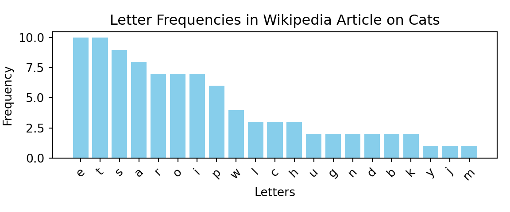
If we try to generate the text one letter at a time
import numpy as np
# Generate text one letter at a time by sampling from the letter frequencies
counts = np.array(counts)/sum(counts) # Normalize counts to probabilities
import random
gentext = random.choices(letters, weights=counts, k=20)
print("Generated letters:", ''.join(gentext))
## Generated letters: bioetsapatelacapsiosWhat if we do bi-grams, i.e. pairs of letters? We can do this by counting the frequencies of each pair of letters in the text. This will give us a sense of how often each pair of letters appears in the text, which is a good starting point for understanding how the model generates text.
Code
from collections import defaultdict
bigram_counts = defaultdict(int)
for i in range(len(cat_text) - 1):
if cat_text[i].isalpha() and cat_text[i + 1].isalpha():
a, b = cat_text[i].lower(), cat_text[i + 1].lower()
# Only process standard English letters (a-z)
if 'a' <= a <= 'z' and 'a' <= b <= 'z':
bigram = (a, b)
bigram_counts[bigram] += 1
# Sort by frequency
sorted_bigram_counts = sorted(bigram_counts.items(), key=lambda x: x[1], reverse=True)
# Plot the heatmap of bigram frequencies
import seaborn as sns
bigram_matrix = np.zeros((26, 26))
for (a, b), count in sorted_bigram_counts:
bigram_matrix[ord(a) - ord('a'), ord(b) - ord('a')] = count
sns.heatmap(bigram_matrix, cmap='Blues')
plt.xlabel('Second Letter')
plt.ylabel('First Letter')
plt.title('Bigram Frequencies in Wikipedia Article on Cats')
plt.xticks(ticks=np.arange(26) + 0.5, labels=[chr(i + ord('a')) for i in range(26)], rotation=45);
plt.yticks(ticks=np.arange(26) + 0.5, labels=[chr(i + ord('a')) for i in range(26)], rotation=0);
plt.tight_layout()
This will take us one step closer to how LLMs generate text. We used Lev Tolstoy’s “War and Peace” novel to estimate the, 2-grams, 3-grams, 4-grams, and 5-grams letter frequencies and to generate text based on those models. The results are shown below:
2-gram: ton w mer. y the ly im, in peerthayice waig trr. w tume shanite tem.
3-gram: the ovna gotionviculy on his sly. shoutessixeemy, he thed ashe
4-gram: the with ger frence of duke in me, but of little. progomind some later
5-gram: the replace, and of the did natasha's attacket, and aside. he comparte,We used the nltk package (Bird, Klein, and Loper 2009) to estimate the letter frequencies from Tolstoy’s novel and generate text based on those models. The results show that even with simple letter-based models, we can generate text that resembles natural language, albeit with nonsensical phrases. As the n-gram order increases, the generated text becomes more coherent—the 5-gram output even captures character names like “Natasha.” This progression illustrates the core principle that underlies all language models: context matters, and more context leads to better predictions.
However, LLMs have much larger context windows, meaning they can consider much longer sequences of text when generating the next token. Modern models such as Gemini 3 Pro use context windows of up to 1 million tokens—approximately the size of Leo Tolstoy’s “War and Peace” novel. However, if you try to use a simple counting method (as we did with n-grams), you will quickly run into the problem of combinatorial explosion. For example, if we try to estimate 10-grams letter frequencies, we will have to count \(26^{10}\) (over 141 trillion) combinations of letters. If we use word-based n-grams, the problem is even worse, as the number of common words in the English language is estimated to be around 40,000. This means that the number of possible 2-grams is 1.6 billion, for 3-grams is 64 trillion, and for 4-grams is 2.6 quadrillion. By the time we get to a typical question people ask when using AI chats with 20 words, the number of possibilities is larger than the number of particles in the universe. The challenge lies in the fact that the total amount of English text ever written is vastly insufficient to accurately estimate these probabilities, and this is where LLMs come in. They use neural networks to “compress” the input context into dense vector embeddings—distributed representations that capture semantic meaning—and “interpolate” the probabilities of the next token. This allows them to estimate probabilities for sequences they have never seen before and generate text that is coherent and contextually relevant. The main component of these neural networks is the transformer architecture.
The first step an LLM takes to “compress” the input is applying the attention mechanism. This concept is similar to convolutional neural networks (CNNs) used in computer vision, where the model focuses on different parts of the input image. In LLMs, attention allows the model to focus on different parts of the input text when generating the next token (see Chapter 23 for the mathematical details).
24.3 The Scale Approach: How Bigger Became Better
For decades the high-quality data analysis required finding a parsimonious model. Meaning the model that is as small as possible, but still able to capture the essential patterns in the data. This is the approach of traditional statistical learning. The deep learning models broke this trend and were shown to work very well then number of parameters is large, often you would have more parameters than data points. We discussed this phenomenon in Section 19.8.
This scaling behavior has led to exponential growth in model sizes. GPT-1, released in 2018 with 117 million parameters, was already considered large for its time. GPT-2, with 1.5 billion parameters, was initially deemed too dangerous to release publicly. GPT-3’s 175 billion parameters represented a quantum leap.

Architectural innovations like Mixture of Experts (MoE) models allow for scaling model capacity further without proportionally increasing computational requirements, by activating only a subset of parameters for processing each token.
Beyond scaling up parameters, new architectures are emerging. Multimodal transformers are beginning to bridge the gap between text, images, audio, and other modalities, creating systems that can understand and generate content across multiple forms of media. These systems process diverse inputs within a single unified model, enabling rich interactions like chatting about an image or generating music from text descriptions.
24.4 Choosing the Right Model for Your Application
Although, the bigger models are a go-to approach, it does not always mean better choice. When choosing an appropriate model for a problem at hand, you need to consider several factors, such ability to upload your data to the cloud provider, cost of the model, the performance of the model on your specific task and latency requirements. Let’s discuss those factors in more detail.
Uploading your data to the model hosted by the cloud provider is a common practice. However, sometimes you are restricted by security policies, regulations (like HIPAA or GDPR), or massive data volumes. Then on-premises deployment: when you host the model (e.g., an open-source LLM like Llama 3 or Mistral) on your own hardware is one option. This gives you total control over the data lifecycle but requires significant capital expenditure (CapEx) for GPUs and maintenance. Another option that became recently available is to use isolated environments on the cloud provider. While the hardware is still theirs, the network is logically separated from the public internet, and data can be transferred over dedicated physical lines to avoid the public web. Typically, in this scenario model provider also offers zero data retention, which is a policy that ensures that the user data is deleted after it is used for inference and is not used for training or other purposes.
The cost of the model can be a prohibitive factor. In many commercial applications companies would be loosing money if they are using expensive “out-of-the-box” models. Therefore, they need to develop their own models or use open-source models that are more cost-effective. In this case you option is yet again to select a smaller model that you can host on your own hardware and fine-tune on your own data. We will discuss fine-tuning in more detail in Section 24.5.
The performance of an existing model on your specific task is yet another factor. Typically, the bigger the model, the better the performance, but smaller models can be better (or good enough) for a particular use case. Size tiers offer different trade-offs: very small models (around 3 billion parameters or fewer) are fast and efficient and can often run on consumer hardware for simpler tasks like basic text classification or domain-specific chatbots; medium-sized models (7 to 30 billion parameters) are often the sweet spot, offering stronger performance with manageable compute; and large models (30 billion parameters or more) provide the best general performance and can show emergent capabilities, but typically require specialized hardware and higher cost. Beyond size, specialized variants matter too: code models are trained for software tasks (including “fill-in-the-middle” editing), multilingual models target many languages, and domain-specific models are tuned to specialized corpora. In practice, constraints like GPU memory, inference speed, cost (cloud APIs versus self-hosting), latency, and privacy requirements often drive the final choice.
Although, typically, there is a trade-off between the size and the performance, techniques such as knowledge distillation, fine-tuning, and quantization can help you achieve good performance on a complex task with a smaller model. We discuss these techniques in detail in Section 24.5. A notable example occurred in late 2025 when Google’s Gemini 3 Flash—a distilled model designed for efficiency—outperformed the flagship Gemini 3 Pro on coding benchmarks, demonstrating that focused optimization can matter more than raw parameter count for specific tasks.
Finally, the latency requirement is a key factor in applications such as speech bots (e.g., Alexa, Google Home) and real-time applications (e.g., trading, finance). In these scenarios, the Time to First Token (TTFT)—the delay before the model starts outputting its response—is often more critical than the overall throughput. Several architectural and algorithmic techniques have been developed to minimize this delay.
One such technique is Speculative Decoding (Leviathan, Kalman, and Matias 2023; Chen et al. 2023), which addresses the sequential bottleneck of autoregressive generation. Since generating each token requires a full forward pass of a large model, the process is inherently slow. Speculative decoding uses a much smaller, faster “draft” model to predict several potential next tokens in a single step. The larger “target” model then verifies these tokens in parallel. If the target model agrees with the draft, multiple tokens are accepted at once; if not, only the incorrect ones are discarded and regenerated. This approach can achieve significant speedups (often 2-3x) without any loss in accuracy.
sequenceDiagram
participant D as Draft Model (Small)
participant T as Target Model (Large)
participant O as Output
Note over D, T: Step 1: Draft model generates K tokens
D->>D: Predict x_1, x_2, ..., x_K
D->>T: Send draft tokens
Note over T: Step 2: Target model verifies in parallel
T->>T: Compute probabilities for x_1, ..., x_K
Note over T, O: Step 3: Accept/Reject
T-->>O: Output accepted tokens + 1 new token
Another critical optimization is KV Caching (Key-Value Caching). During autoregressive generation, the model repeatedly attends to the same previous tokens. Rather than recomputing the keys and values for these tokens at every step, the model stores them in memory. This reduces the computational cost of generating each subsequent token from \(O(n^2)\) to \(O(n)\) relative to the current sequence length.
For real-time streaming applications, models can begin processing input before waiting until the entire query is available. This is known as Streaming Prefill or Incremental Prefill. Instead of waiting for the entire user query to be completed, the model starts the “prefill” phase—processing the input and building the KV cache—on chunks of the input as they arrive. This is particularly useful for voice-activated systems where the beginning of a command can be processed while the user is still speaking.
To improve efficiency in multi-user environments, Continuous Batching (Yu et al. 2022) allows the server to start processing new requests immediately, even if other requests in the same batch are already in the middle of generation. Unlike static batching, which waits for all sequences in a batch to finish before starting a new one, continuous batching dynamically inserts and removes requests, significantly increasing throughput and reducing waiting times.
Finally, Quantization and Model Distillation (discussed in detail in Section 24.5) remain the most common ways to reduce latency by simplifying the model itself. Quantization reduces the numerical precision of model weights (e.g., from 16-bit to 4-bit), allowing for faster arithmetic and smaller memory footprints, while distillation creates smaller student models that “mimic” the reasoning of larger teachers.
24.5 Distillation, Fine-tuning and Quantization
While scaling up model parameters has driven remarkable advances, practical deployment often demands the opposite: smaller, faster, more efficient models. Three complementary techniques—distillation, fine-tuning, and quantization—bridge the gap between research capabilities and production requirements. These techniques leverage existing foundation models for specific needs at a fraction of the cost of training from scratch.
Quantization
Quantization reduces the numerical precision of model weights and activations, typically from 32-bit floating-point to 8-bit integers or even lower. This compression reduces memory bandwidth requirements and enables faster arithmetic operations on supported hardware. Modern quantization techniques like GPTQ and AWQ can reduce model size by 4× with minimal accuracy degradation, enabling larger models to run on consumer hardware or significantly reducing inference costs in production deployments.
The mathematics of quantization involves mapping continuous values to a discrete set of levels. For a weight \(w\) with range \([w_{min}, w_{max}]\), 8-bit quantization maps it to one of 256 integer values: \[ w_q = \text{round}\left(\frac{w - w_{min}}{w_{max} - w_{min}} \times 255\right) \]
More sophisticated approaches like post-training quantization (PTQ) analyze calibration data to find optimal scaling factors, while quantization-aware training (QAT) incorporates quantization effects during training to minimize accuracy loss.
Fine-tuning
Fine-tuning adapts a pre-trained model to specific tasks or domains by continuing training on specialized data. This process leverages the general knowledge encoded during pre-training while teaching the model task-specific patterns and vocabulary. Pre-trained language models possess extensive knowledge from their training, but they are not optimized for any particular task out of the box. While a general-purpose LLM can generate logically valid responses, those responses may not align with the specific requirements of a given application. For instance, a fintech company might need a model that interprets balance sheets or analyzes regulatory filings with domain-specific precision, while a healthcare application requires understanding of medical terminology and compliance with clinical guidelines.
Fine-tuning offers several key advantages:
- Data efficiency: Effective fine-tuning can be achieved with thousands rather than millions of examples.
- Cost efficiency: Reusing pre-trained models reduces computational cost compared to training from scratch.
- Versatility: The same pre-trained model can be fine-tuned for multiple applications across domains.
- Improved performance: Fine-tuned models learn task-specific patterns critical for their target applications.
There are several approaches to fine-tuning, each with different trade-offs between performance, resource requirements, and flexibility.
Full fine-tuning updates all model parameters, resulting in a brand-new version of the model optimized for the specific task. This approach offers maximum flexibility in adapting the model, as it can learn features and representations across all layers of the architecture. However, full fine-tuning requires significant compute resources and memory, and risks catastrophic forgetting—where the model loses its general capabilities as it specializes for the new task.
Parameter-efficient fine-tuning (PEFT) methods address these limitations by modifying only a small subset of parameters while freezing most of the model. The key idea is to add task-specific layers on top of the frozen base model, allowing fundamental language understanding to remain unaffected. PEFT techniques like LoRA (Low-Rank Adaptation) train small adapter modules, dramatically reducing memory and compute requirements while maintaining performance. LoRA works by decomposing weight updates into low-rank matrices: \[ W' = W + BA \] where \(B \in \mathbb{R}^{d \times r}\) and \(A \in \mathbb{R}^{r \times k}\) with rank \(r \ll \min(d,k)\), typically \(r = 8\) to \(64\). This decomposition means training far fewer parameters while achieving comparable results to full fine-tuning.
Instruction fine-tuning trains the model with examples explicitly showing how it should respond to different queries. The labeled data consists of input-output pairs where inputs convey the desired behavior and outputs represent the expected responses. By exposing the model to a diverse range of instructions and appropriate responses, it learns to generalize across different types of tasks and follow user intentions more reliably.
Sequential fine-tuning gradually adapts a model to increasingly specialized tasks. For example, a general AI model could first be fine-tuned for medical terminology, then refined further for pediatric cardiology. This progressive specialization allows the model to build upon previously learned knowledge.
Multi-task learning trains the model on datasets containing instructions for various tasks over multiple training cycles. The model learns to balance different objectives without forgetting earlier ones, creating a more versatile system capable of handling diverse requests.
Fine-tuning is often combined with other post-training techniques such as Reinforcement Learning from Human Feedback (RLHF) to align model behavior with human preferences. These advanced techniques are discussed in detail in Section 24.7.
Model Distillation: Knowledge Transfer
As we push the boundaries of model performance with larger parameter counts and complex post-training reasoning chains, a practical challenge emerges: deployment efficiency. Training and deploying models with hundreds of billions of parameters requires considerable computational power, specialized hardware, and substantial energy consumption. Large models also demand significant memory to store their weights and process inputs, making them impractical for many real-world applications. While a massive 175B+ parameter model might offer superior reasoning, running it for every user query is often prohibitively expensive and slow.
Model Distillation addresses this challenge by transferring knowledge from a large, complex “teacher” model to a smaller, more efficient “student” model. The student learns to replicate the teacher’s behavior on specific tasks, achieving similar results while being significantly smaller and faster. Distilled models can typically achieve 2–8× faster inference compared to their teacher models, depending on architecture and hardware optimization.
A striking example of distillation’s potential emerged in late 2025, and was documented in Virtu article. Google’s Gemini 3 Flash—a model explicitly designed for speed and cost efficiency—outperformed the flagship Gemini 3 Pro on the SWE-bench coding benchmark, achieving 78% compared to Pro’s 76.2%. This inversion of the expected hierarchy was accompanied by widespread reports of Pro exhibiting critical issues: deleting code, losing context mid-conversation, and failing to maintain logical coherence across extended interactions. The phenomenon has been attributed to knowledge distillation, where the compression process that created Flash from Pro inadvertently preserved and even sharpened the most effective coding reasoning pathways while discarding less relevant capabilities. Flash also demonstrated advantages in speed (roughly three times faster) and cost (about 70% cheaper), leading major development tools to adopt it as their preferred model for coding assistance. This case illustrates a broader principle: architectural efficiency and focused optimization can matter more than raw parameter count for specific tasks.
Model distillation, formalized by Hinton, Vinyals, and Dean (2015) in their seminal paper “Distilling the Knowledge in a Neural Network,” is based on a Teacher-Student architecture. The core insight is that a large, pre-trained teacher model has learned much more than just the final answers—it has learned a rich internal representation of the data structure.
When a standard model trains on a “hard” label (e.g., identifying an image as “Dog”), it is penalized if it outputs anything other than 100% confidence in that class. However, a sophisticated teacher model might output probabilities like: Dog: 0.90, Cat: 0.09, Car: 0.0001. The fact that the model thinks the image is 9% likely to be a “Cat” and almost impossible to be a “Car” contains valuable information—it tells us that this specific dog looks somewhat like a cat (perhaps it’s fluffy or small). This similarity information, often called dark knowledge, is lost if we train only on the final hard label.
Distillation trains a smaller student model to mimic these soft targets (the probability distributions) produced by the teacher. By doing so, the student learns how the teacher generalizes, not just what the teacher predicts. Thanks to the level of detail provided in soft targets, the student model can achieve high performance with a smaller amount of data than the original teacher required.
Different distillation approaches focus on transferring different aspects of the teacher’s knowledge:
Response-based distillation focuses on having the student mimic the final output layer of the teacher model. The student learns to imitate the teacher’s predictions by minimizing a distillation loss, ensuring it captures the nuanced information present in the teacher’s outputs. This is the most common form of distillation.
Feature-based distillation leverages the internal representations or features learned by the teacher in its intermediate layers. Rather than focusing solely on final outputs, this approach encourages the student to match the teacher’s internal activations, learning how the teacher processes information at multiple levels.
Relation-based distillation captures and transfers the relationship knowledge between data samples and layers within the neural network. This method complements response-based approaches by encoding how different inputs relate to each other in the teacher’s representation space.
To expose soft probabilities effectively, distillation uses a modified Softmax function with a parameter called Temperature (\(T\)). Standard Softmax (\(T=1\)) tends to push probabilities towards 0 or 1, hiding the smaller details. Raising \(T\) “softens” the distribution, making smaller class probabilities more prominent and easier for the student to learn from.
The probability \(q_i\) for class \(i\) is calculated as:
\[ q_i = \frac{\exp(z_i/T)}{\sum_j \exp(z_j/T)} \tag{24.1}\]
where \(z_i\) are the logits (raw outputs) of the model.
The training objective for the student model typically combines two loss functions:
- Distillation Loss (Soft Loss): The Kullback-Leibler (KL) Divergence between the student’s soft predictions and the teacher’s soft targets (both computed at temperature \(T\)). KL Divergence measures how one probability distribution differs from a reference distribution.
- Student Loss (Hard Loss): The standard Cross-Entropy loss between the student’s predictions (at \(T=1\)) and the actual ground-truth labels.
\[ L = \alpha L_{soft} + (1-\alpha) L_{hard} \]
This combined objective forces the student to be accurate on the data (hard loss) while also mimicking the generalization behavior of the teacher (soft loss). The weighting parameter \(\alpha\) balances these two objectives.
The following diagram illustrates the distillation pipeline, where the student learns from both the dataset and the teacher’s soft outputs.
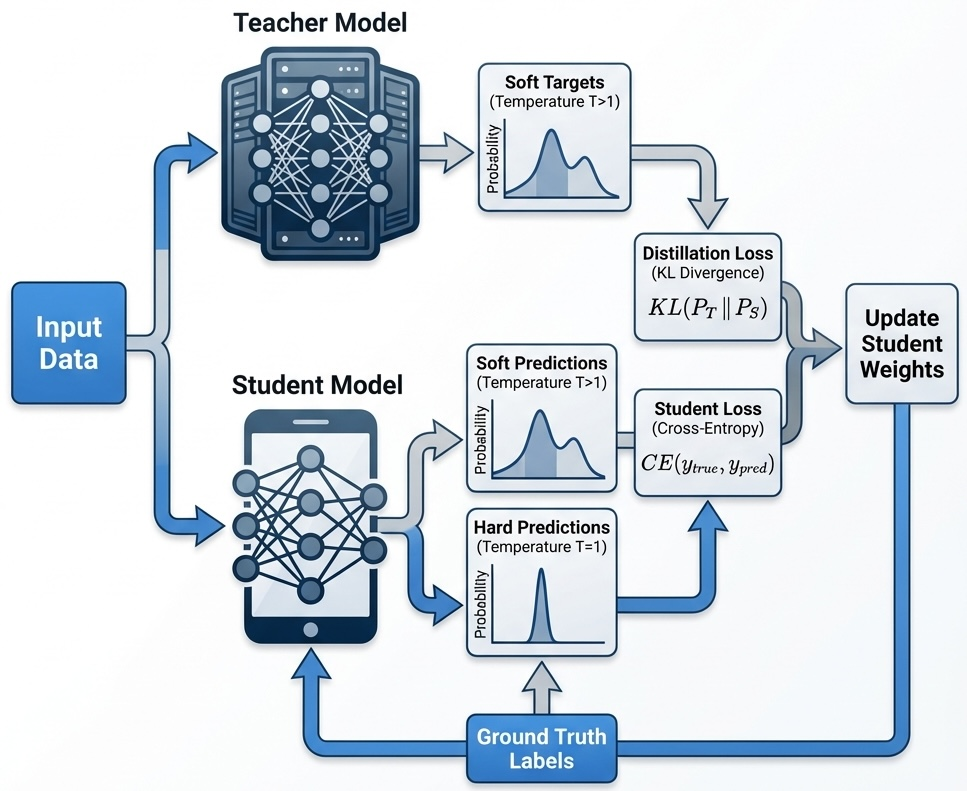
Several schemes have been developed to facilitate the distillation process:
Offline distillation refers to the traditional approach where the teacher model is trained first, then the student model is trained separately using the soft labels generated by the teacher. This is the most straightforward approach when a well-trained teacher is available.
Online distillation is used when a large pre-trained teacher is not available for a given task, or when the teacher model is so large that there is insufficient storage or processing capacity. In this approach, the teacher and student models are trained simultaneously, with the student learning from the teacher dynamically during training.
Self-distillation is a variant where a single model acts as both teacher and student. Knowledge is transferred from deeper layers of the network to shallower layers of the same network. This technique can improve model performance and regularization without requiring a separate teacher model. Studies have shown that self-distillation can maintain up to 95% of the teacher’s accuracy while drastically reducing model size and inference time.
From Theory to Practice
Since the work of Hinton, Vinyals, and Dean (2015), model distillation has evolved from a theoretical framework into a critical component of modern machine learning infrastructure. The efficacy of this approach was notably demonstrated in the domain of Natural Language Processing by Sanh et al. (2019), whose DistilBERT model retained approximately 97% of the original BERT performance while reducing parameters by 40% and increasing inference speed by 60%. DistilBERT was specifically created to address challenges associated with large pre-trained language models, focusing on computational and memory efficiency.
In contemporary production environments, distillation serves as the bridge between massive “reasoning” models and efficient deployment. Advanced pipelines utilize a teacher-student paradigm where a large-scale model (e.g., a 200B+ parameter reasoning model) generates synthetic data or soft targets. These outputs are subsequently used to fine-tune smaller, cost-effective models (e.g., 8B parameter models) for specific downstream tasks. This methodology, often aligned with techniques like distilling step-by-step (Hsieh et al. 2023), allows for the deployment of models that exhibit high-level reasoning capabilities with significantly reduced computational overhead.
Furthermore, distillation enables the proliferation of Edge AI, permitting sophisticated inference on resource-constrained devices where memory and power budgets preclude the use of full-scale foundation models. Mobile implementations like MobileBERT run efficiently on smartphones, enabling features such as on-device text prediction and voice assistants that give users AI functionality without requiring constant cloud connectivity. By effectively compressing the “dark knowledge” of giant architectures into efficient runtimes, distillation addresses the practical dichotomy between model scale and deployment feasibility.
Major e-commerce and recommendation platforms have applied distillation techniques to improve their systems. For example, privileged feature distillation has been used to enhance recommendation systems, achieving measurable gains in click-through and conversion rates while maintaining reasonable inference costs.
Model distillation offers several key benefits:
- Reduced model size: Enables deployment on devices with limited storage and computational power.
- Faster inference: Smaller models process data more quickly, reducing response times.
- Lower resource consumption: Reduces VRAM usage, memory bandwidth, and power consumption.
- Direct cost reduction: Distilled models require less compute, reducing operational costs.
Distillation is most effective when applied after a model has been fully pre-trained or fine-tuned on a specific task. At this stage, the teacher model has already captured rich task-specific knowledge that can be efficiently transferred to the student. Common use cases include:
- Production deployment: Reducing serving costs and meeting hardware constraints before model release
- Edge and mobile applications: Enabling AI features on resource-constrained devices
- Budget-conscious inference at scale: Serving thousands of users simultaneously while managing costs
- Task-specific optimization: Replacing overly large general-purpose models with compact, focused alternatives
The Rise of Small Language Models
The success of distillation and efficient fine-tuning has contributed to a broader trend: the rise of Small Language Models (SLMs). These models, typically ranging from a few hundred million to several billion parameters, challenge the assumption that bigger is always better.
SLMs offer compelling advantages for many practical applications:
- They can run on consumer hardware, including laptops and smartphones
- They provide faster inference times, suitable for real-time applications
- They consume less energy, reducing both costs and environmental impact
- They can be deployed in privacy-sensitive contexts where data cannot leave the device
Techniques like distillation, parameter-efficient fine-tuning, and quantization work synergistically to create capable SLMs. A typical workflow might involve: (1) distilling knowledge from a large teacher model, (2) fine-tuning the student on domain-specific data using LoRA, and (3) quantizing the result for efficient deployment. This pipeline democratizes access to advanced AI capabilities, making sophisticated models accessible across diverse platforms and use cases.
As the demand for AI continues to grow, the importance of techniques that balance capability with efficiency will only increase. The future of LLM deployment lies not just in scaling up, but in the intelligent compression and adaptation of powerful models for practical use.
24.6 Evaluating Model Performance
When evaluating models, researchers and practitioners rely on various benchmarks that test different aspects of language understanding and generation. The field has evolved significantly as earlier benchmarks became saturated—with top models achieving near-perfect scores—and concerns about test set contamination grew. Modern evaluation suites now emphasize more challenging reasoning tasks and dynamic, contamination-resistant designs.
For complex reasoning, GPQA Diamond presents graduate-level questions in biology, physics, and chemistry that challenge even domain experts, while ARC-AGI measures abstract reasoning capabilities that approach the boundaries of general intelligence. Mathematical prowess is tested through competition-level problems from the AIME (American Invitational Mathematics Examination), where top models now achieve scores that would qualify for elite high school competitions.
Practical software engineering capabilities are evaluated via SWE-Bench, which tasks models with resolving real GitHub issues from popular open-source repositories—a far more realistic test than generating isolated code snippets. For multimodal understanding, MMMU-Pro extends earlier benchmarks with challenging questions requiring joint reasoning over text and images. Figure 24.3 shows that as of December 2025, the most cost-effective models for software engineering are Claude 4/4.5 Opus and GPT-5.1-codex.
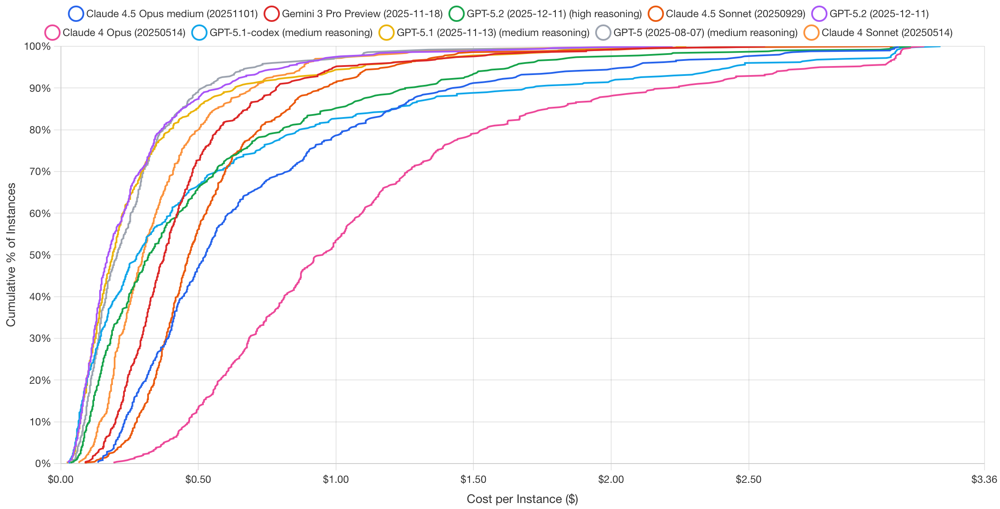
To combat benchmark contamination—where models may have memorized test questions during training—dynamic benchmarks like LiveBench continuously refresh their question sets using recent math competitions, newly published papers, and current news articles. Perhaps most ambitiously, Humanity’s Last Exam crowdsources extremely difficult questions from domain experts across fields, explicitly designed to resist easy saturation.
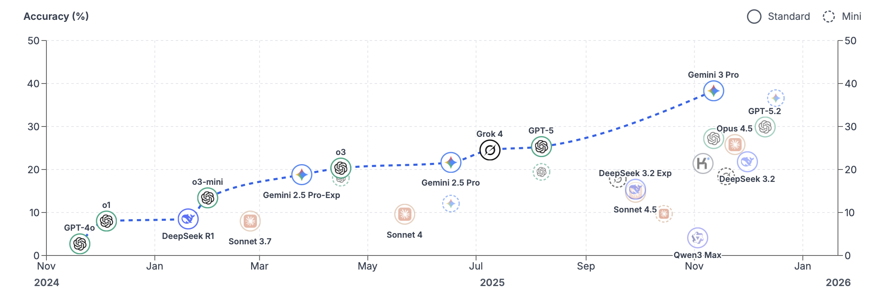
Our personal favorite resource to keep track of the latest and greatest models is LMArena (formerly Chatbot Arena). Rather than relying on static test sets, LMArena uses a community-driven approach where users compare model outputs head-to-head in blind evaluations. Participants see responses from two anonymous models to the same prompt and select the one they prefer. These pairwise comparisons are then aggregated using an Elo rating system—the same method used to rank chess players. When a model wins a comparison, its score increases; when it loses, its score decreases. The magnitude of each adjustment depends on the expected outcome: defeating a higher-rated model yields a larger score boost than beating a lower-rated one. This dynamic system continuously adapts as new votes accumulate, providing a real-time reflection of collective user preferences that complements traditional benchmark evaluations. For example, for the WebDev category, the LMArena ranks Claude 4/4.5 in the top three along with GPT-5.2. This is a similar ranking we saw in SWE-Bench.
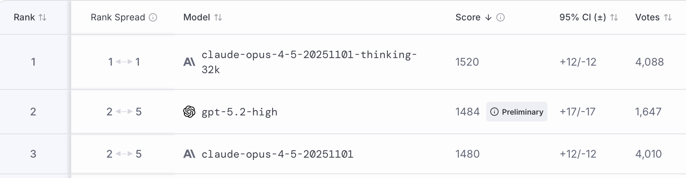
However, benchmarks have limitations and don’t always reflect real-world performance. A model that excels at multiple-choice questions might struggle with open-ended creative tasks. Code generation benchmarks might not capture the nuanced requirements of your specific programming domain. The key is to use benchmarks as a starting point while conducting thorough validation using data that closely resembles your actual use case.
Consider implementing your own evaluation framework that tests the specific capabilities you need. If you’re building a customer service chatbot, create test scenarios that reflect your actual customer interactions. If you’re developing a creative writing assistant, evaluate the model’s ability to generate diverse, engaging content in your target style or genre.
24.7 Post-training Techniques
While LLMs excel at predicting the next token in a sequence, their true potential emerges through post-training techniques that teach them to reason, think step-by-step, and align with human expectations. When we think about improving LLMs’ skills, our focus often centers on aspects such as improved grammar or more natural-sounding responses. But what sets a helpful LLM apart is its ability to reason. This involves thinking through problems, breaking them down into steps, making informed decisions, and explaining how it arrived at an answer. Reasoning takes next-token prediction to the next level by adding logic, structure, and goal-oriented thinking.
Without strong reasoning skills, models often skip steps, make confident but incorrect claims (hallucinations), or struggle with tasks that require planning or logic. For any organization, this creates a significant risk, undermining user trust and leading to unreliable outcomes. The good news is that we can improve reasoning with the right techniques and upgrade a pre-trained LLM with broad knowledge into a valuable tool for real-world tasks that aligns with users’ needs.
Post-training refines a model’s capabilities, teaching it to move beyond simply predicting the next word. This means moving past the first plausible answer and compelling the model to build a more deliberate, logical response. It learns to break down a task, reflect on its outputs, and consult external tools—mimicking a more methodical, human-like reasoning process. This is how we upgrade a generalist LLM into a specialized tool that is more accurate, trustworthy, and aligned with specific business goals.
One form of reasoning involves combining independent facts to arrive at an answer, rather than simply regurgitating memorized information. For example, when asked, “What is the capital of the state where Dallas is located?” a model could just recall “Austin” if it has seen that exact question before. However, a deeper level of reasoning is at play. Interpretability research reveals that models like Claude first activate concepts representing “Dallas is in Texas” and then connect this to another concept, “the capital of Texas is Austin.” This demonstrates the ability to perform multi-step reasoning by chaining together different pieces of knowledge.
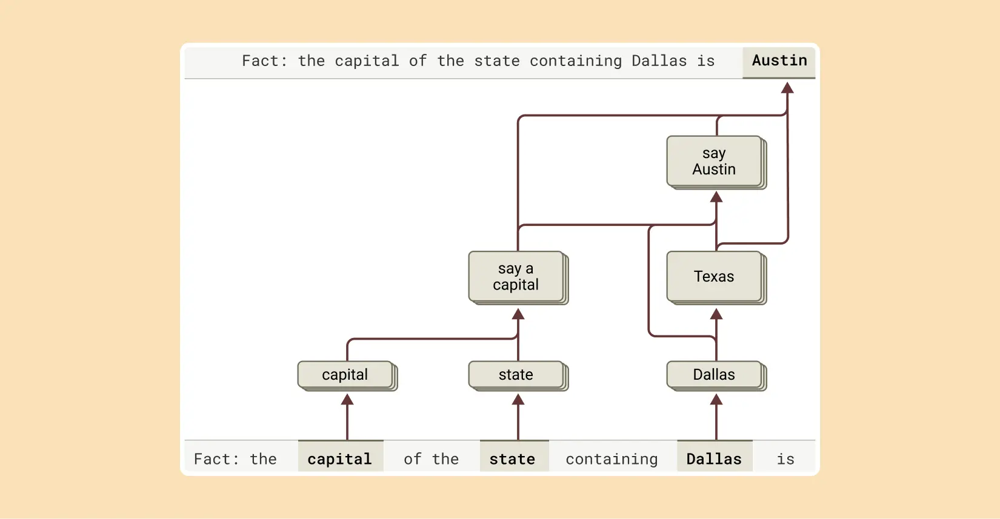
This multi-step reasoning process can be visualized as follows:
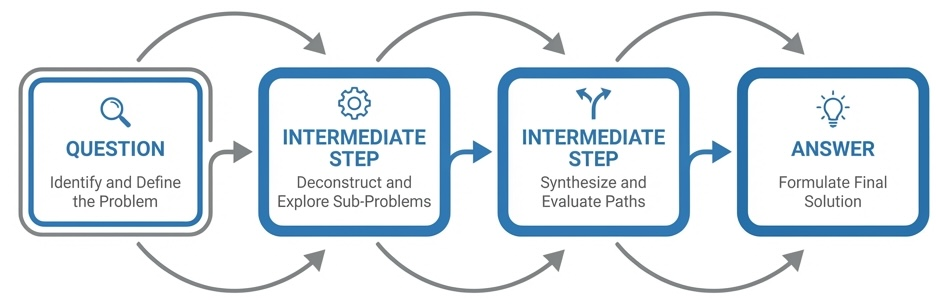
This capability can be tested by intervening in the model’s thought process. For instance, if the “Texas” concept is artificially replaced with “California,” the model’s output correctly changes from “Austin” to “Sacramento,” confirming that it is genuinely using the intermediate step to determine its final answer. This ability to combine facts is a crucial component of advanced reasoning.
The landscape of post-training methods used to boost the reasoning abilities of pre-trained LLMs is rich and varied. These techniques build on the model’s existing knowledge, teaching it to follow instructions more effectively and use tools or feedback to refine its answers. Each method adds a new layer of skill, whether it involves breaking down problems, learning from feedback, or drawing on real-world information, all to bridge the model’s reasoning with the human thought process.
However, it’s crucial to understand that even when a model produces a step-by-step “chain of thought,” (CoT) it may not be a faithful representation of its actual reasoning process. Recent research from Anthropic explores this very question, revealing a complex picture: sometimes the reasoning is faithful, and sometimes it’s fabricated to fit a pre-determined conclusion.
When a model is tasked with a problem it can solve, like finding the square root of 0.64, interpretability tools show that it follows a logical path, activating concepts for intermediate steps (like the square root of 64) before reaching the final answer. However, when presented with a difficult problem and an incorrect hint, the model can engage in what researchers call “motivated reasoning.” It starts with the incorrect answer and works backward, creating a believable but entirely fake sequence of steps to justify its conclusion. This ability to generate a plausible argument for a foregone conclusion without regard for truth is a critical limitation. These interpretability techniques offer a way to “catch the model in the act” of faking its reasoning, providing a powerful tool for auditing AI systems.
LLMs were not originally designed to function as calculators; they were trained on text data and lack built-in mathematical algorithms. Yet, they can perform addition tasks, like calculating 36+59, seemingly without explicitly writing out each step. How does a model, primarily trained to predict the next word in a sequence, manage to perform such calculations?
One might speculate that the model has memorized extensive addition tables, allowing it to recall the answer to any sum present in its training data. Alternatively, it could be using traditional longhand addition methods similar to those taught in schools.
However, research reveals that Claude, a specific LLM, utilizes multiple computational strategies simultaneously. One strategy estimates an approximate answer, while another precisely calculates the last digit of the sum. These strategies interact and integrate to produce the final result. While addition is a straightforward task, analyzing how it is executed at this granular level—through a combination of approximate and precise methods—can provide insights into how Claude approaches more complex problems.
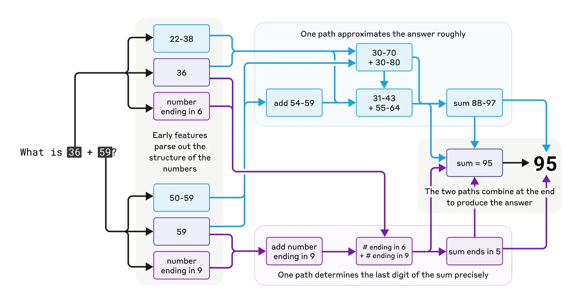
Models like Claude 3.7 Sonnet can “think out loud,” often improving answer quality, but sometimes misleading with fabricated reasoning. This “faked” reasoning can be convincing, posing reliability challenges. Interpretability helps distinguish genuine reasoning from false.
For instance, Claude accurately computes the square root of 0.64, showing a clear thought process. However, when tasked with finding the cosine of a large number, it may fabricate steps. Additionally, when given a hint, Claude may reverse-engineer steps to fit a target, demonstrating motivated reasoning.
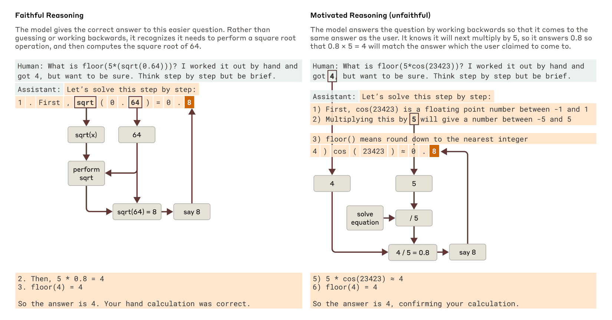
This highlights that a model’s explanation of its thought process can’t always be trusted. For high-stakes applications, being able to verify the internal reasoning process, rather than just accepting the output, is essential for building reliable and trustworthy AI.
Instruction Fine-Tuning (IFT) represents perhaps the most fundamental approach to improving model reasoning. The core idea involves taking a pre-trained model and running a second pass of supervised learning on mini-lessons, each formed as a triple of instruction, input, and answer.
Consider a math word problem where the instruction asks to solve this math word problem step by step, the input presents Sarah has 12 apples and gives away 5. How many does she have left?, and the answer provides
Step 1: Start with 12 apples.
Step 2: Subtract 5 apples given away.
Step 3: 12 - 5 = 7 apples remaining. Each training example teaches the model how to transform a task description into the steps that solve it (Chung et al. 2022). After thousands of such drills, the model learns many small skills and when to switch among them. The steady practice trains it to deliver precise answers that match the instruction rather than sliding into a generic reply. Empirical evidence demonstrates the power of this approach: Flan UPaLM 540B, a variant of the UPaLM model fine-tuned with instruction-based tasks, significantly outperformed the original UPaLM 540B model. UPaLM stands for Unified Pre-trained Language Model, which is a large-scale language model designed to handle a wide range of tasks. The Flan UPaLM 540B was evaluated across four benchmarks: MMLU (Massive Multitask Language Understanding), which tests the model’s ability to handle a variety of academic subjects; BBH (Big-Bench Hard), a set of challenging tasks designed to push the limits of language models; TyDiQA (Typologically Diverse Question Answering), which assesses the model’s performance in answering questions across diverse languages; and MGSM (Mathematics Grade School Math), which evaluates the model’s capability in solving grade school-level math problems. The Flan UPaLM 540B showed an average improvement of 8.9% over the original model across these benchmarks.
Domain-Specific Supervised Fine-Tuning takes the IFT principle and applies it within specialized fields. This approach restricts the training corpus to one technical field, such as medicine, law, or finance, saturating the model weights with specialist concepts and rules. Fine-tuning on domain-specific data enables the model to absorb the field’s vocabulary and structural rules, providing it with direct access to specialized concepts that were scarce during pre-training. The model can quickly rule out answers that do not make sense and narrow the search space it explores while reasoning. Mastering a domain requires data that captures its unique complexity, utilizing domain-specific examples, human-labeled edge cases, and diverse training data generated through hybrid pipelines combining human judgment and AI. This process enhances the model’s ability to follow complex instructions, reason across modalities and languages, and avoid common pitfalls like hallucination. The effectiveness of this approach is striking: in ICD-10 coding, domain SFT catapulted exact-code accuracy from less than 1% to approximately 97% on standard ICD coding (including linguistic and lexical variations) and to 69% on real clinical notes (Hou et al. 2025).
Chain-of-Thought and Chain of Reasoning
Chain-based reasoning techniques represent some of the most powerful tools for improving LLM reasoning capabilities. These approaches guide models to break down complex problems into manageable steps, explore multiple solution paths, and learn from their mistakes—mirroring the deliberate problem-solving strategies humans employ when tackling difficult tasks.
Chain-of-Thought (Wei et al. 2023) prompting offers a remarkably simple yet powerful technique that requires no model retraining. The approach involves showing the model a worked example that spells out every intermediate step, then asking it to “think step by step.” Writing the solution step by step forces the model to reveal its hidden reasoning, making it more likely for logically necessary tokens to appear. Because each step is generated one at a time, the model can inspect its own progress and fix contradictions on the fly. The empirical results are impressive: giving PaLM 540B eight CoT examples improved its accuracy on GSM8K from 18% to 57%. This improvement came entirely from a better prompt, with no changes to the model’s weights.
Tree-of-Thought extends the chain-of-thought concept by allowing exploration of multiple reasoning paths simultaneously. Instead of following one chain, this method lets the model branch into multiple reasoning paths, score partial solutions, and expand on the ones that look promising. Deliberate exploration stops the first plausible idea from dominating. ToT lets the model test several lines of reasoning instead of locking onto one. When a branch hits a dead end, it can backtrack to an earlier step and try another idea, something a plain CoT cannot do. The model operates in a deliberate loop: propose, evaluate, and explore. This approach resembles a CEO evaluating multiple business strategies, modeling several potential outcomes before committing to the most promising one, preventing over-investment in a flawed initial idea. This principle has been applied in projects to improve coding agents focused on generating pull requests for repository maintenance and bug-fixing tasks across multiple programming languages. Researchers have analyzed thousands of coding agent trajectories, evaluating each interaction step-by-step to provide more explicit guidance to the models, enabling them to make better decisions on real coding tasks. In the “Game of 24” puzzle, GPT-4 combined with CoT reasoning solved only 4% of the puzzles, but replacing it with ToT raised the success rate to 74% (Yao et al. 2023).
Reflexion
Reflexion (Shinn et al. 2023) introduces a self-improvement mechanism that operates through iterative feedback. After each attempt, the model writes a short reflection on what went wrong or could be improved. That remark is stored in memory and included in the next prompt, giving the model a chance to revise its approach on the next try. Reflexion turns simple pass/fail signals into meaningful feedback that the model can understand and act on. By reading its own critique before trying again, the model gains short-term memory and avoids repeating past mistakes. This self-monitoring loop of try, reflect, revise guides the model toward better reasoning without changing its weights. Over time, it helps the model adjust its thinking more like a human would, by learning from past mistakes and trying again with a better plan. A GPT-4 agent using Reflexion raised its success rate from 80% to 91% on the HumanEval coding dataset.
Non-Linear Reasoning Capabilities
Recent advances in LLM reasoning have focused on establishing these non-linear capabilities, moving beyond simple chain-of-thought prompting to more sophisticated reasoning architectures. These approaches recognize that human reasoning is rarely linear—we backtrack when we realize we’ve made an error, we consider multiple possibilities in parallel, and we iteratively refine our understanding as we gather more information.
One promising direction is iterative reasoning, where models are allowed to revise their intermediate steps based on feedback or self-evaluation. Unlike traditional autoregressive generation where each token is final once generated, iterative approaches allow the model to revisit and modify earlier parts of its reasoning chain. This might involve generating an initial solution, evaluating it for consistency, and then revising specific steps that appear problematic.
A compelling example of how extended thinking improves reasoning capabilities can be seen in mathematical problem-solving performance. When Claude 3.7 Sonnet was given more computational budget to “think” through problems on the American Invitational Mathematics Examination (AIME) 2024, its accuracy improved logarithmically with the number of thinking tokens allocated. This demonstrates that allowing models more time for internal reasoning—similar to how humans perform better on complex problems when given more time to think—can lead to substantial performance gains.
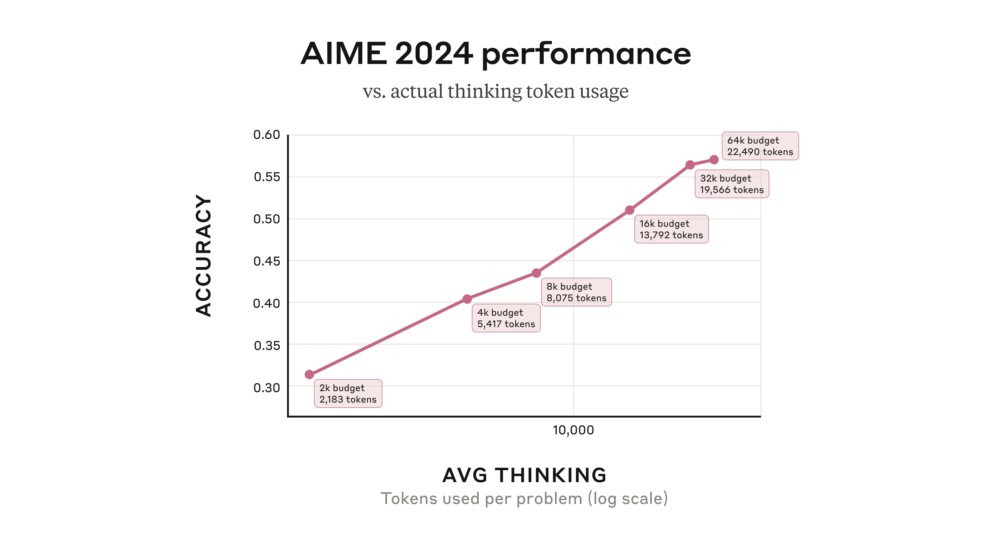
Figure 24.10 shows Claude 3.7 Sonnet’s performance on the 2024 American Invitational Mathematics Examination improving logarithmically with the number of thinking tokens used per problem. The model generally uses fewer tokens than the maximum budget allocated, suggesting it adaptively determines when sufficient reasoning has been applied. Source: Anthropic’s Visible Extended Thinking.
Parallel hypothesis generation represents another departure from linear reasoning. Instead of committing to a single reasoning path, these approaches generate multiple competing explanations or solutions simultaneously. The model can then evaluate these alternatives, potentially combining insights from different paths or selecting the most promising direction based on evidence accumulation.
Dynamic tool selection and reasoning takes this further by allowing models to adaptively choose which reasoning strategies or external tools to employ based on the specific demands of the current problem. Rather than following a predetermined sequence of operations, the model can dynamically decide whether to retrieve external information, perform symbolic computation, or engage in pure logical reasoning based on the current state of the problem.
These non-linear reasoning capabilities are particularly important for complex problem-solving scenarios where the optimal approach isn’t clear from the outset. In scientific reasoning, for example, a hypothesis might need to be revised as new evidence emerges. In mathematical problem-solving, an initial approach might prove intractable, requiring a fundamental shift in strategy. In code generation, debugging often requires jumping between different levels of abstraction and considering multiple potential sources of error.
The implementation of non-linear reasoning often involves sophisticated orchestration between multiple model calls, external tools, and feedback mechanisms. This represents a shift from viewing LLMs as simple text generators to understanding them as components in more complex reasoning systems. As these capabilities mature, we can expect to see LLMs that not only generate human-like text but also exhibit more human-like reasoning patterns—flexible, adaptive, and capable of handling ambiguity and uncertainty with greater finesse.
Reinforcement Learning from Human Feedback (RLHF) represents a sophisticated approach to aligning model behavior with human preferences. The process involves taking a pre-trained model and generating several answers for real user prompts. Human reviewers rank those answers, a reward model learns these rankings, and the main model is updated to score higher on that reward. This loop optimizes the model to produce outputs humans prefer rather than those that merely score well on next-token likelihood. Because humans reward answers that are complete, fact-checked, and well-explained, the model learns to value clear logic over quick guesses. Each reinforcement learning step trains it to produce responses that follow instructions, chain ideas coherently, and avoid unsupported claims, aligning its internal decision-making with human expectations. Safety and alignment research relies heavily on these techniques; Constitutional AI approaches, for instance, attempt to instill models with explicit principles and values during this phase. In the original InstructGPT study by Ouyang et al. (2022), annotators preferred answers from the 175B RLHF-tuned model over the same-size GPT-3 baseline 85% of the time. Even the 1.3B RLHF model outperformed the baseline, despite having 100 times fewer parameters.
Chain-of-Action (CoA) (Pan et al. 2025) represents the most sophisticated integration of reasoning and external tool use. This approach decomposes a complex query into a reasoning chain interleaved with tool calls such as web search, database lookup, or image retrieval that are executed on the fly and fed into the next thought. Each action grounds the chain in verified facts. By using up-to-date information and multi-reference faith scores, the model can remain grounded and make more informed decisions, even when sources disagree. Because it can plug in different tools as needed, it’s able to take on more complex tasks that require different data modalities. CoA outperformed the leading CoT and RAG baselines by approximately 6% on multimodal QA benchmarks, particularly on compositional questions that need both retrieval and reasoning.
24.8 Data quality and quantity
One might assume that training an LLM for non-linear reasoning would require tremendous amounts of data, but recent research reveals that data quality can compensate for limited quantity. This finding has significant implications for organizations looking to develop reasoning-capable models without massive data collection efforts.
Two compelling examples demonstrate this principle. The S1 research (Yang et al. 2025) fine-tuned their base model, Qwen2.5-32B-Instruct, on only 1,000 high-quality reasoning examples, yet achieved remarkable performance improvements. Their data collection process was methodical: they started with 59,029 questions from 16 diverse sources (including many Olympiad problems), generated reasoning traces using Google Gemini Flash Thinking API through distillation, then applied rigorous filtering. Problems were first filtered by quality (removing poor formatting), then by difficulty—a problem was deemed difficult if neither Qwen2.5-7B-Instruct nor Qwen2.5-32B-Instruct could solve it, and the reasoning length was substantial. Finally, 1,000 problems were sampled strategically across various topics.
Similarly, the LIMO (Less is More for Reasoning) research (Ye et al. 2025) demonstrated that quality trumps quantity. Taking NuminaMath as a base model, they fine-tuned it on merely 817 high-quality curated training samples to achieve impressive mathematical performance with exceptional out-of-distribution generalization. Their results were striking enough to warrant comparison with OpenAI’s o1 model.
For high-quality non-linear reasoning data, LIMO proposes three essential guidelines:
Structured Organization: Tokens are allocated to individual “thoughts” according to their importance and complexity, with more tokens devoted to key reasoning points while keeping simpler steps concise. This mirrors how human experts organize their thinking—spending more time on difficult concepts and moving quickly through routine steps.
Cognitive Scaffolding: Concepts are introduced strategically, with careful bridging of gaps to make complex reasoning more accessible. Rather than jumping directly to advanced concepts, the reasoning process builds understanding step by step, similar to how effective teachers structure lessons.
Rigorous Verification: Intermediate results and assumptions are frequently checked, and logical consistency is ensured throughout the reasoning chain. This is especially important given the risk of hallucinations in complex reasoning tasks.
The verification aspect deserves special attention. The rStar-Math research (Guan et al. 2025) offers an innovative approach by training their LLM to produce solutions as Python code with text as code comments. This format allows for automatic verification—the code can be executed to check correctness, providing immediate feedback on the reasoning process. With agentic capabilities, this approach could create a feedback loop where the LLM learns from its execution results.
These findings suggest that the path to better reasoning capabilities lies not in simply collecting more data, but in curating datasets that exemplify the structured, scaffolded, and verified thinking patterns we want models to learn. This approach makes advanced reasoning capabilities more accessible to organizations that may not have access to massive datasets but can invest in creating high-quality training examples.
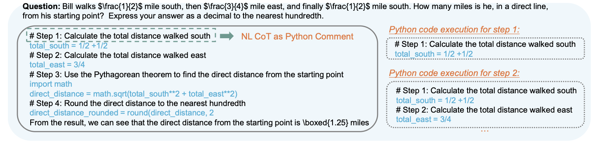
Figure 24.11 shows how rStar-Math integrates code execution with reasoning by formatting solutions as Python code with explanatory comments. This approach allows for automatic verification of intermediate steps, creating a feedback loop where the model can learn from execution results and catch errors in real-time. The figure demonstrates how mathematical reasoning can be made more reliable by grounding abstract concepts in executable code.
24.9 Dealing with Context Window Limitations: Context Engineering
Consider this paradox: GPT-4 Turbo advertises a 128,000-token context window—enough to process an entire novel—yet production systems routinely degrade as context fills. Response times spike, accuracy drops, and costs spiral. The promise of million-token windows collides with the reality of quadratic attention complexity and the finding that models often ignore information buried in the middle of long prompts.
Large language models are stateless: they generate output from input, then forget everything. The context window—the maximum tokens processed in one forward pass—defines what the model can “see.” Everything must fit: system prompt, conversation history, retrieved documents, examples, and the query itself.
Context window management couples three concerns that production systems care about:
- Cost: More tokens means more spend
- Latency: More tokens means more compute and slower responses
- Accuracy: More tokens can help, but long prompts dilute signal and introduce failure modes
This creates a fundamental trade-off. You can pack in more conversation history and more documents, but the model often becomes slower and less reliable. The goal is not maximum context but the right context, assembled under a fixed budget.
A useful mental model treats the context window as a budget:
\[ B \approx S + T + H + R + U \]
where \(B\) is the usable token budget, \(S\) is system instructions, \(T\) is tool schemas, \(H\) is conversation history, \(R\) is retrieved evidence, and \(U\) is the user’s current input. Context engineering is deciding what to keep, what to compress, and what to retrieve—so that \(R\) contains evidence rather than redundancy.
Many visible quality improvements in LLM applications come from better context management rather than larger parameter counts: retrieval that finds the right passage, reranking that removes near-misses, compression that preserves key facts, caching that avoids resending static instructions, and memory that keeps multi-turn workflows coherent. You can often get a large fraction of the value of a bigger model by improving the pipeline that feeds it.
The Lost-in-the-Middle Problem
Before diving into solutions, it’s worth understanding the failure mode that dominates production systems. Large language models exhibit a characteristic U-shaped attention curve: they attend strongly to the beginning and end of their context but underweight information in the middle. Research confirms documents positioned in the middle of a long context receive 20–40% less attention than documents at the boundaries (N. F. Liu et al. 2023).
This architectural bias has practical consequences. If you retrieve 15 document chunks and the most relevant one lands in position 7, the model may effectively ignore it. The fix is counterintuitive: don’t fight the attention bias—exploit it by placing the most relevant documents at the start and end.
When to Use Long Context vs. RAG vs. Summarization
Before diving into specific techniques, choose the right strategy for your use case:
| Scenario | Strategy | Rationale |
|---|---|---|
| Document fits in window; need holistic reasoning | Stuff entire document | Cross-references and global structure preserved |
| Corpus larger than window; factual lookup | RAG with small chunks | Precision matters more than narrative |
| Corpus larger than window; synthesis task | RAG with hierarchical retrieval | Need both global context and specific evidence |
| Long conversation history | Tiered memory + summarization | Keep recent turns verbatim; compress older context |
| Repetitive prompt structure | Caching + compression | Avoid paying to reprocess static content |
The decision often comes down to whether the task requires holistic reasoning (favor long context) or precise evidence retrieval (favor RAG). Many production systems combine both: retrieve evidence via RAG, then use the full context window for reasoning over that evidence.
Attention Efficiency: FlashAttention and Ring Attention
Transformers rely on attention, and naive attention scales quadratically with sequence length (\(O(n^2)\)). Even with optimizations, long prompts increase memory traffic and reduce throughput.
FlashAttention addresses this by fusing attention computation into a single kernel that keeps intermediate results in fast on-chip SRAM rather than writing large \(N \times N\) matrices to slow GPU memory. This reduces memory requirements from \(O(N^2)\) to \(O(N)\). FlashAttention-3, optimized for NVIDIA H100 architecture, achieves up to 740 TFLOPs/s and enables 16,000-token contexts on 10 GB of VRAM (Dao 2023).
For multi-million token applications, Ring Attention distributes computation across GPU clusters. Query, key, and value tensors are split into chunks, with each GPU computing attention for its local chunk while exchanging states in a ring pattern. Context window size scales linearly with cluster size (H. Liu, Zaharia, and Abbeel 2023).
These optimizations are essential infrastructure, but they don’t eliminate the fundamental constraint: treat tokens as a scarce resource and build systems that spend them on evidence rather than redundancy.
Retrieval-Augmented Generation
Retrieval-Augmented Generation (RAG) addresses one of the fundamental limitations of LLMs: their reliance on knowledge encoded during training. Before answering, a retriever grabs documents or information relevant to the query and injects them into the context window so the model can reason over fresh evidence. RAG grounds the model in verifiable facts, drastically reducing hallucinations and improving user trust. Instead of relying on potentially outdated or incorrect memorized knowledge, the model reasons over fresh, injected evidence.
The RAG process works as follows: the user’s query is redirected to an embedding model, where it is converted into a numeric form; these embeddings are then compared with a knowledge base; the embedding model locates relevant data; the retrieved information is integrated into the prompt for the LLM as additional context; and finally, the output, combining both the retrieved information and the original prompt, is submitted to the user. This approach resembles a lawyer building an argument not from memory, but by citing specific, relevant legal precedents directly in court.
The integration of RAG into an enterprise workflow-generation system reduced the rate of hallucinated steps and tables from 21% to 7.5% when evaluated on the HumanEval benchmark (Ayala and Bechard 2024). In real-world applications enhancing LLMs’ multilingual reasoning, RAG has been used to feed models verified, multilingual documents at inference time. The results show that models can answer complex questions in multiple languages, citing specific evidence from retrieved text. Every factual claim becomes traceable, eliminating guesswork and demonstrating a consistent, grounded reasoning process across languages.
Rather than expanding what fits in context, RAG dynamically selects what belongs there. The core insight: for most queries, only a fraction of a knowledge base is relevant. RAG retrieves that fraction on demand.
A basic RAG pipeline:
- Index: Split documents into chunks, embed into vectors, store in vector database
- Retrieve: Given a query, find similar chunks via embedding similarity
- Generate: Concatenate retrieved chunks with the query and prompt the LLM
flowchart LR D[Documents] --> C[Chunk & Embed] C --> V[(Vector DB)] Q[Query] --> E[Embed] E --> V V -->|top-k| R[Retrieved chunks] R --> P[Prompt + Context] Q --> P P --> L[LLM] L --> A[Answer]
This architecture allows models to access knowledge bases orders of magnitude larger than any context window.
RAG versus Fine-tuning
RAG and fine-tuning (discussed in Section 24.5.2) represent two distinct strategies for adapting LLMs to specific applications. While fine-tuning modifies the model’s internal parameters based on domain-specific data, RAG retrieves relevant information from external knowledge bases and incorporates it into the prompt at inference time. In RAG, the model’s parameters remain unchanged during the retrieval process.
RAG is particularly useful when:
- Information evolves frequently or is constantly changing
- Labeled data is insufficient or unavailable
- Access to external, up-to-date sources is required
Fine-tuning is more appropriate when:
- Direct control over model behavior is desired
- Labeled data is available
- The same pre-trained model needs to be adapted for multiple specific tasks
- Compliance standards or ethical guidelines must be strictly enforced
In many cases, combining both approaches yields optimal results: fine-tuning provides the foundational domain adaptation while RAG supplies dynamic, current information at inference time. This hybrid approach, sometimes called Retrieval-Augmented Fine-Tuning (RAFT), trains models to effectively use retrieved context while maintaining domain expertise. RAFT extends RAG by fine-tuning the model on tasks that explicitly require using retrieved documents, teaching it to better incorporate external information into its reasoning process.
Advanced RAG Variants
The basic RAG pipeline admits many refinements. Fixed-size chunking (every 512 tokens) often severs sentences mid-thought. Semantic chunking uses embeddings to find natural break points. The Max–Min algorithm embeds sentences sequentially, comparing each to the current chunk. If similarity exceeds a threshold, the sentence joins; otherwise, a new chunk begins. No universal optimal chunk size exists: 64–128 tokens suit factual lookup; 512–1,024 tokens suit narrative tasks. Chroma’s ClusterSemanticChunker uses dynamic programming to maximize within-chunk similarity, improving retrieval precision by 8–15% over greedy methods (Chroma Research 2024).
Pure vector search can miss exact tokens, identifiers, or acronyms. A user searching for “RFC 2616” needs lexical matching, not semantic similarity to “HTTP specification.” Hybrid retrieval combines dense embeddings with keyword search (BM25). Results merge via Reciprocal Rank Fusion:
\[ H = (1 - \alpha) \cdot \text{BM25 Score} + \alpha \cdot \text{Semantic Score} \]
Typical \(\alpha \approx 0.5\) for general-purpose retrieval. See Weaviate’s discussion for tuning guidance.
Many RAG failures are scope failures, not retrieval failures. If the user asks “What is the refund policy for EU customers?”, retrieval should be constrained by region, document type, and effective date before scoring semantic similarity—a technique called metadata filtering. See Haystack’s metadata filtering guide for practical patterns.
Vector similarity is a coarse filter. Reranking applies a cross-encoder to the top-\(k\) candidates, scoring query-document pairs jointly. ColBERTv2 and BERT-based rerankers achieve 15–30% improvement over embedding-only retrieval (Khattab and Zaharia 2020). A standard two-stage pipeline retrieves 20+ candidates via hybrid search (maximizing recall), then reranks to top 3–5 via cross-encoder (maximizing precision).
When documents are large and interconnected, flat retrieval struggles. Hierarchical retrieval addresses this: RAPTOR builds a tree of summaries—retrieve high-level summaries to identify relevant sections, then drill down to specific chunks (Sarthi et al. 2024). GraphRAG extracts knowledge graphs and retrieves entity-relationship paths for multi-entity reasoning (Microsoft Research 2024).
| Variant | Innovation | Best For |
|---|---|---|
| Self-RAG | Joint retriever-generator with self-critique | High-stakes QA (legal, medical) |
| CRAG | Adaptive retrieval with confidence evaluation and web fallback | Tasks requiring current information |
| Graph RAG | Knowledge graph extraction; retrieves entity paths | Multi-entity reasoning |
| HyDE | Generates hypothetical answer, retrieves based on that | Vague or ambiguous queries |
HyDE addresses a common failure mode: vague queries that don’t match relevant documents. The model first generates a hypothetical answer, then uses that answer’s embedding for retrieval—even if factually wrong, it contains vocabulary that matches correct documents (Gao et al. 2022).
Solving Lost-in-the-Middle
Addressing the lost-in-the-middle phenomenon requires both architectural improvements and practical mitigation strategies. Recent research has systematically evaluated various approaches to this challenge. Gupte et al. (2025) introduced the GM-Extract benchmark to study LLM performance on retrieval of control variables, proposing distinct metrics for spatial retrieval capability (Document Metric) and semantic retrieval capability (Variable Extraction Metric). Their analysis categorizes mitigation methods into black-box approaches (modifications to prompts and retrieval strategies) and white-box approaches (modifications to model architecture or attention mechanisms), finding that the efficacy of these techniques is highly nuanced and context-dependent.
The most straightforward fix is strategic document positioning after reranking:
- Most relevant → position at start
- Second-most relevant → position at end
- Medium relevance → position in middle
Combined with two-stage retrieval (broad recall, then precision reranking), this inverts the U-curve to match model attention patterns.
OpenAI’s GPT-5.2 introduced the MRCRv2 (Multi-Round Coreference Resolution) benchmark, specifically designed to evaluate long-context performance across extended conversations. This benchmark measures how well models track entities and maintain coherence across multiple turns of dialogue, directly addressing scenarios where critical information might otherwise be lost mid-context. Early evaluations suggest that reasoning models like GPT-5.2 show improved performance on these metrics, though the improvements are not uniform across all task types.
Chain-of-thought (CoT) prompting also helps mitigate lost-in-the-middle effects by encouraging models to explicitly reference and reason through retrieved documents in sequence. When models are prompted to “think step by step” about each piece of evidence, they are less likely to skip over information positioned in the middle of the context. This approach, combined with retrieval-augmented generation, creates a reasoning pipeline that forces attention to all retrieved chunks rather than just those at the boundaries.
Long-context reranking takes this further: concatenate retrieved chunks in original document order and score jointly, capturing cross-chunk relationships. This often improves accuracy by 10–15% over isolated chunk reranking.
from llama_index.core.postprocessors import LLMRerank, MetadataReplacementPostProcessor
from llama_index.core.node_parser import SentenceWindowNodeParser
node_parser = SentenceWindowNodeParser.from_defaults(
window_size=3,
window_metadata_key="window"
)
index = VectorStoreIndex.from_documents(documents, node_parser=node_parser)
postprocessors = [
MetadataReplacementPostProcessor(target_metadata_key="window"),
LLMRerank(top_n=3, service_context=service_context)
]
query_engine = index.as_query_engine(
similarity_top_k=10,
node_postprocessors=postprocessors
)Caching and Compression
Prompt compression reduces token count before inference, cutting latency and cost. Microsoft’s LLMLingua-2 formulates compression as token classification: a small Transformer determines which tokens are essential, achieving 2–5× compression with minimal performance loss (Jiang et al. 2023). Compression works well for verbose natural language (instructions, transcripts, conversation history), RAG systems retrieving 10+ chunks per query, and multi-step reasoning with repeated context. It fails for structured data—JSON schemas, SQL, API specifications—where dropping a token from user_id → userid breaks functionality.
For applications with large static prompt components, context caching provides substantial savings. Systems like Anthropic’s prompt caching allow marking static portions—system instructions, documentation, tool schemas—for reuse across API calls, reducing costs significantly and eliminating redundant computation.
Even with sufficient tokens, context can fail. Instruction conflicts occur when system prompts contradict retrieved text or user queries. Retrieval drift happens when top-\(k\) chunks are semantically related but not evidentially useful. Duplication wastes budget and amplifies noise. Stale memory silently drops constraints or commitments from earlier turns. Prompt injection allows malicious content in retrieved documents to hijack model behavior. Mitigations include explicit conflict resolution in system prompts, deduplication before context assembly, and allowlists for tool invocation.
Multi-turn applications face a token explosion problem: keeping every turn eventually exceeds the budget; truncating aggressively loses commitments and constraints. Production systems implement tiered memory: (1) Active Memory (100–500 tokens) holds the current turn plus last 2–3 exchanges; (2) Session Memory (500–2,000 tokens) stores compressed summaries, key entities, and cross-turn dependencies; (3) Persistent Memory in an external vector or graph database is retrieved on demand.
flowchart LR U[User] --> A[Active context<br/>last few turns + current task] A --> M[Model call] M --> O[Output] A --> S[Session summary<br/>compact running state] A --> P[Persistent memory<br/>vector store / graph] P -->|retrieve on demand| A S -->|refresh| A
The MemGPT pattern virtualizes LLM context, treating it like an operating system’s page cache (Packer et al. 2023). At 70% capacity, reasoning pauses for memory pressure handling. The system identifies least critical content for eviction, compresses it to an external tier, and retrieves relevant context back on demand. This pattern sustains multi-turn conversations indefinitely within finite windows.
Neural Memory Systems
The tension between attention’s quadratic cost and the desire for persistent memory has driven research into architectures that learn during inference.
Titans gives models a deep memory module—a multi-layer perceptron that updates on the fly for each input (Behrouz, Pezeshki, and Fakoor 2025). Updates are triggered by a “surprise signal” computed from gradient magnitudes, analogous to biological synaptic strengthening during prediction error.

MIRAS generalizes this approach, treating memory as learnable parameters updated via local optimization with configurable loss functions (Behrouz and Pezeshki 2025).
Larimar takes a different approach, adding a distributed episodic memory to existing LLMs (Das et al. 2024). This brain-inspired architecture allows dynamic, one-shot updates of knowledge without retraining or fine-tuning—achieving 8–10× speedups over traditional knowledge editing methods while also supporting selective forgetting and information leakage prevention.
These architectures suggest a future where AI systems combine attention for immediate reasoning with neural memory for long-term, persistent knowledge.
Evaluation and Deployment
Effective context management requires measuring performance across three dimensions. Retrieval quality is assessed via Precision@k (fraction of top-\(k\) retrieved documents that are relevant), Recall (fraction of all relevant documents that were retrieved), and Mean Reciprocal Rank (average of \(1/\text{rank}\) for the first relevant result—higher when relevant documents appear earlier). Compression efficiency tracks compression ratio (original tokens divided by compressed tokens), task retention (performance on downstream tasks after compression), and latency improvements. Generation quality measures exact match accuracy (whether the answer matches a gold reference exactly), F1 scores (harmonic mean of precision and recall at the token level), and faithfulness—whether claims in the answer can be traced to the provided context rather than hallucinated. Libraries like RAGAS provide standardized evaluation pipelines for RAG systems, computing metrics such as faithfulness, answer relevancy, and context precision.
Different applications demand different context engineering strategies. Enterprise knowledge assistants typically employ hybrid retrieval (15 semantic + 5 BM25 candidates), cross-encoder reranking to the top-3, and LLMLingua-2 compression at 2–3×, targeting under 2,000 tokens of evidence with sub-500ms latency. Citations to retrieved chunks ensure auditability. Deep research systems favor hierarchical retrieval via RAPTOR for multi-level abstraction and GraphRAG for structural questions, synthesizing 5–10 documents while preserving source order. Codebase assistants combine sparse retrieval (symbols, filenames) with dense retrieval (conceptual similarity), limiting context to 3–5 surgical code blocks with aggressive caching of tool schemas, targeting under 4,000 tokens with sub-second latency.
A production deployment should address each stage systematically: chunking strategy matched to task requirements (small for lookup, large for narrative), hybrid search with metadata filtering, cross-encoder reranking to top-3 or top-5, high-relevance content positioned at context boundaries, compression applied to verbose content but skipped for structured data, static prompt components pinned via caching, tiered memory architecture for multi-turn workflows, and continuous monitoring of retrieval precision, token spend, and answer faithfulness.
24.10 Combining Techniques for Optimal Performance
Each technique brings its advantages, and the most effective AI systems often combine them strategically. An agent might follow structured prompts through instruction fine-tuning, think through problems step by step using chain-of-thought reasoning, refine its answers through self-review via reflexion, and align its tone based on human feedback through RLHF. This stacked approach has become standard in today’s leading models: most large LLMs, including GPT-4, are first trained with supervised fine-tuning and then polished with RLHF.
To understand these approaches systematically, we can think of instruction fine-tuning as teaching with flashcards, learning specific input-output patterns for following user commands. Domain-specific fine-tuning resembles medical school specialization, absorbing field-specific vocabulary and rules for expert knowledge tasks. Chain-of-thought operates like showing your work in math class, generating intermediate reasoning steps for complex problem solving. Tree-of-thought functions as decision tree exploration, branching and evaluating multiple paths for planning and strategy tasks. Reflexion mirrors learning from mistakes through self-critique and improvement for iterative problem solving. RAG operates like an open-book exam, accessing external information for fact-based reasoning. RLHF resembles teacher feedback, learning from human preferences for human-aligned responses. Finally, chain-of-action works like using tools while thinking, interleaving reasoning with actions for multi-step tasks requiring external resources.
In summary, the table below offers a concise overview of each post-training method. It includes simplified analogies to clarify the technical concepts, outlines the fundamental working principles, and highlights typical applications.
| Post-training Method | Simplified Analogy | Basic Working Principle | Typical Applications |
|---|---|---|---|
| Instruction Fine-Tuning | Teaching with flashcards | Learning specific input-output patterns for following user commands | Following user commands |
| Domain-Specific Supervised Fine-Tuning | Medical school specialization | Absorbing field-specific vocabulary and rules for expert knowledge tasks | Expert knowledge tasks |
| Chain-of-Thought | Showing your work in math class | Generating intermediate reasoning steps for complex problem solving | Complex problem solving |
| Tree-of-Thought | Decision tree exploration | Branching and evaluating multiple paths for planning and strategy tasks | Planning and strategy tasks |
| Reflexion | Learning from mistakes | Writing a short reflection on what went wrong, then revising the approach | Iterative problem solving |
| Retrieval-Augmented Generation | An open-book exam, accessing external information for fact-based reasoning | Grabbing documents or information relevant to the query and injecting them into the context window so the model can reason over fresh evidence | Fact-based reasoning |
| Reinforcement Learning from Human Feedback | Teacher feedback, learning from human preferences for human-aligned responses | Taking a pre-trained model and generating several answers for real user prompts. Human reviewers rank those answers, a reward model learns these rankings, and the main model is updated to score higher on that reward | Human-aligned responses |
| Chain-of-Action | Using tools while thinking, interleaving reasoning with actions for multi-step tasks requiring external resources | Decomposing a complex query into a reasoning chain interleaved with tool calls such as web search, database lookup, or image retrieval that are executed on the fly and fed into the next thought | Multi-step tasks requiring external resources |
Summary
Context management is a systems problem: chunking, retrieval, reranking, positioning, compression, and memory interact under a fixed budget. The engineering goal is simple—spend tokens on evidence and constraints that matter, not on redundancy.
Organizations deploying RAG without these optimizations leave substantial accuracy gains unrealized and pay more than necessary in API costs. The tools—LLMLingua-2, semantic chunking, cross-encoder reranking, prompt caching—are mature and open-source. What separates successful deployments is systematic application: measuring retrieval precision, compression ratios, and answer quality at each stage.
Emerging neural memory systems suggest a future beyond context window constraints—architectures that learn during inference and maintain persistent state across interactions. For now, context engineering remains essential: the difference between “it kind of works” and a reliable production system.